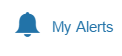

This user guide is designed to guide you through the functions of MTrade Plus, providing step by step instructions and links to all related information that you may require.
Note: Certain features mentioned in the help guide is only available in our Live paid accounts. The prices in the demo account are subjected to a 15 minute delay.
Document Conventions:
 icon is used when writing a Tip.
icon is used when writing a Tip.- icon is used when writing a Note.
Listed below are the hardware and software requirements you need to have in order to install the application on your mobile.
IOS
Devices: iPhone 4S and above
OS: iOS 7.1 and above
Browser: Mobile Safari v7.1 and above, Chrome iOS v38.0 and above
Android
Devices: Work on any device
OS: 4.4 and above (KitKat, Lollipop, and Marshmallow)
Browser: Google Chrome Android v38.0
If you need further technical support, please contact us;
Head Office:
Mubasher Financial Services181 Platinum Tower, Building 190,
Road 2803, Al Seef District,
Manama, Kingdom of Bahrain.
Tel: +973 17556139
Fax: +973 17556124
Contact Client Services:
From within Bahrain: 1730 0849 or 1755 6139From outside Bahrain: +973 1730 0849 or +973 1755 6139
Email: global@mubashertrade.com
Fax: +973 1755 6124
Contact Dealing Room:
From Within Bahrain: 1760 0105From outside Bahrain: +973 1760 0105
MTrade Plus is a comprehensive, sophisticated trading platform tailored to active investors. The unique market features in MTrade Plus provide you with the edge you need to be an effective trader in the fast moving market. MTrade Plus supports the full functionality of trading in equity and the application is fully integrated with advanced charting tools to help you analyze the market movement.
Note: In the application, icon represents market data is delayed by at least 15 minutes.
Tip: You can rotate any screen in this application horizontally for your ease.
How to login to the application:
- Enter the Username.
- Enter the Password using the virtual keyboard.
- Tap Login.
Optional: Tap the Remember Username check box to save the username and the password to avoid entering them every time you login to the application.
How to logout from the application:
- On the Settings pane, tap Log Out.
Easy navigation
- Option One: Tap on the to access the Side bar menu
- Option Two: Access the Bottom bar menu items
- Tap on More to access more features of MTrade Plus
How to place the first order:
- In the Watch List, tap on the symbol name and select the Buy icon
 .
. - If you have more than one portfolio, then select the required from the Portfolio drop down.
- Select the required Order Type.
- Market - is sent to the market and is executed at the best bid for sell orders or best ask for buy orders, as available at the time.
- Limit - is an order where the maximum buying price or the minimum selling price is specified. The order will be executed at the specified price or better.
- Enter the Quantity of stocks and the Price of a stock that you are going to purchase. Price is not a mandatory field for ‘Market’ orders.
- Select other optional order details depending on your requirement.
- Once the required details are entered, you can tap the Buy button.
- Tap OK to confirm the order.
Different Order Types:
After you placed the order you can monitor its progress using the Order List.
Application provides you a variety of market information. This information is categorised into two sections.
- Markets
- Global Summary
To access them go to the Market tab and tap either Markets or Global Summary
To check market information:
Market Summary
This section gives an overview of the current status of the market (exchange).
- Market Date
- Market Status
- Turnover
- Trades
- Volume
- Symbols Traded
- Market Summary Indication in green, red and blue bars
- Index selection dropdown
- Last traded value, change and the percentage change of the selected index
- Chart view of the index
Top Stocks
Use this feature to view the top rated stocks in an exchange.
You can view market information from around the world using the Global Market Summary. It lets you monitor price movement of key market Indices, Commodities and Currencies with last traded price, change and %change data. Information on GMS such as oil prices, FX, major market movements internationally and regionally affect local markets and useful for investors.
The price movement of these Indices, Commodity and Currency sets is presented in a chart as well, and you can click on a required time period on the chart to change its history.
Note: price data on the Global Market Summary subject to few seconds delay. Please contact Customer Support if you need to subscribe for real-time data.
Use this feature to view the top rated stocks in an exchange. The stocks shown here are top rated under different categories such as;
Top Gainers by Change
Top Gainers by % Change
Top Losers by Change
Top Losers by % Change
Most Active by Volume
Most Active by Trades
To view Top Stocks:
- Under More, tap Top Stocks.
- Tap the Filter icon given on the Top Stocks screen and select the required exchange from the given dropdown.
- Select the required category from the next dropdown.
The Screener feature will help you to screen your symbols in any combination of the following categories;
- Fundamental
- Technical
- Descriptive
Creating a Screener
- Tap on the Screener .
- Select your filter criteria from the three given categories. For a good search result ensure that you have selected meaningful filter rules. You will need at least one filter criteria to proceed with the screener results.
- To see the Screen results, tap on in the same panel.
Screener allows you to filter upto using three criteria. If you want to select another criterion, change from a previously selected criterion.
Sort your results
- You can sort your results on a selected criteria. Simply click on the column header to sort.
Using the Custom Watch List you can view market movement of symbols by looking at the last price and change. By default, the Custom Watch List comes with a set of symbols that you may wish to trade with, however you have the option to remove those symbols as desired and add only the symbols that you may require by following the below given steps.
Note: Mobile version of this application does not show Full Market data. Therefore, you have to search and add the required symbols from the Full Market to the Custom Watch List.
When you tap on a symbol name in the Custom Watch List, you will see the Mini Detail Quote of the symbol containing Open, High, Low, Volume details and the chart. From the Mini Detail Quote, you can place trades using the Buy  and Sell
and Sell  buttons. And when you tap the change / %change button or the arrow icon
buttons. And when you tap the change / %change button or the arrow icon  given against the symbol, you will see the full quote of the particular symbol containing Detail Quote, Time & Sales, Order Book and Chart. You can switch between these tabs to view the relevant data.
given against the symbol, you will see the full quote of the particular symbol containing Detail Quote, Time & Sales, Order Book and Chart. You can switch between these tabs to view the relevant data.
To add symbols to the Custom Watch List:
- Tap on Add Symbol .
- In the Symbol Search field that appears, type the symbol name.
- When you see the required symbol, simply tap on the symbol to add it to the watch list.
Note: You can add only 25 symbols per custom watch list.
To remove symbols from the Custom Watch List:
- Tap on the symbol name in the Watch List and select Remove From Watchlist
To create Custom Watch Lists
- Tap on
- Tap on of the vacant text boxes, type in the name you want to give your watch list, and Tap on the save button
To delete a Custom Watch List
- Tap on
- Tap on
- And tap on OK to confirm.
Smart Watch List displays stocks in your portfolio and what you have traded in the past 3 months.
To view the Smart Watch List:
- On the Watch List window, tap the Filter button
 .
. - Tap the dropdown displayed on the left side and select Smart Watch List.
Use Watch List Chart to analyze the market through a comparison of average volume and percentage change.
Horizontal axis:- Volume / 5 Day Average volume.
Vertical axis:- is the %Change, so what is on the top has the highest positive %Change.
Cross line is located at the value of 1.00. Therefore what is right to that cross line is traded at a higher volume than average and what is left to the cross line is traded at a lower volume than the average.
To view the Watch List Chart:
- On the Watch List pane, tap Watch List Chart.
This section describes the trading functionality available in MTrade Plus. You need to have a trading account with your broker in order to use the trading functions. If you have a trading account then you can place orders as required.
In the Watch List, tap on the symbol name and select the Buy icon  .
.
Once you have selected the symbol you wish to trade, follow the below procedure:
- If you have more than one portfolio, then select the required from the Portfolio drop down.
- In the Order Ticket window for buying a stock, the Buying Power indicates the available amount in your portfolio which can be utilized to purchase stocks.
- Select the required Order Type.
- Market - is sent to the market and is executed at the best bid for sell orders or best ask for buy orders as available at the time.
- Limit - is an order where the maximum buying price or the minimum selling price is specified. The order will be executed at the specified price or better.
- Enter the Quantity of stocks and the Quotes of a stock that you are going to purchase. Price is not a mandatory field for ‘Market’ orders.
- Select other optional order details depending on the requirement.
- Once the required details are entered, you can tap the Buy button.
- Tap OK to confirm the order.
Different Order Types:
After you placed the order you can monitor its progress using the Order List.
Order List shows the status of orders you placed on a current trading day.
Once you place an order using MTrade Plus, the order is validated and sent to the Order Management System. During this time, the order will proceed to one of the following statuses:
Queued, Filled, Partially Filled, or Rejected.
The active orders once sent to the exchange, try to find a match from the other side of the Order Book. If a match is not found, then the orders are stored in the Order Book as per the price/time priority. The status of such orders is displayed as Queued in the Order List. Once the order is matched the status in the Order List is updated to Filled.
Please note here the order statuses can differ depending on the exchange.
Once the order you placed is filled, or is partially filled, it is reflected in the Portfolio and the cash balance is updated in the Account Summary window.
To view the placed orders:
- On the Trade pane tap on Order List.
To view details of an order:
- Tap on the symbol name of the required order in the Order List.
Use this procedure to alter some information in the order you had placed already. When amending an order, you can change only a part of the order which is still not executed.
The Amend option is active if the orders meet the following states. Note that the order statuses can differ depending on the exchange.
- Queued
- Partially Filled
- Replaced
To amend an order:
- In the Order List window, tap on the required symbol and select Amend.
- In the Amend order window, edit the required details in Order Type, Quantity, Price, Good Till areas.
- Tap Amend and confirm the order.
Note: Price is editable only for Limit orders.
After amending an order, the order status is changed to Replaced in the Order List and will be updated accordingly based on the execution of the order.
You can also cancel an order before it gets executed during following statuses.
- Queued
- Partially Filled
- Replaced
In case if an order is partially filled, the rest of the order which is not executed can be cancelled. After cancelling a General Order, the system sends a new order with a new Order ID.
To cancel an order:
- In the Order List window, tap on the required symbol and select Cancel.
- In the Cancel order window, Tap Cancel.
From the Account Summary, you can get a quick view of your cash account. The information displayed in Account Summary is updated in real-time and is shown in the currency that you select from the Currency dropdown. As and when you place a buy order, the system blocks the value of the order from the cash account (reflected in the Pending Withdrawal Amount) and once the order is filled the blocked amount becomes zero. When a sell order is placed, the order value is reflected as Unsettled Sales and once the order is filled the Cash Balance is updated. If any of your portfolios are margin enabled, you can view those details from Margin Details section. This section gives a clear picture of your margin details, including the margin limit set for Overnight and Intraday and many more.
To view the Account Summary:
- On the Trade pane tap Account Summary.
- If you have more than one portfolio, then select the required from the Portfolio list.
- Select the related currency from the Currency list.
You will see a summary of your account details.
Account Summary Details
The following columns are available in the Account Summary window.
Cash and Positions Summary
Cash Available for Withdrawal - The cash amount available for withdrawal (Cash Balance - Pending Withdrawal Amount)
Unsettled Sales - The unsettled amount of the sell orders placed
Cash Balance - The cumulative value of your cash account
Pending Amount (Withdrawals and Order) - The amount blocked when placing the buy orders, pending cash withdrawals etc.
Holdings Market Value – The market value of your holdings is displayed
Account Net Worth – The amount available in your cash account once the liabilities are subtracted
Buying Power - The amount of cash available to buy stocks (Cash Available for Withdrawal + OD Limit + Margin)
Unrealized Gain/Loss: - This shows the unrealized profit or loss as a percentage
For Margin accounts
Buying Power (Intraday) - The amount of cash available to buy stocks (Intraday)
Buying Power (Overnight) - The amount of cash available to buy stocks (Overnight)
The portfolio gives a live valuation of your securities based on their current market value, the purchase price and the number of shares held. The Portfolio window helps you manage your accounts, giving you a total overview of trading so that you can easily track the profits and losses on your securities account. You can get an idea of the account at a glance as a profit is displayed in Green and a loss is displayed in Red.
To view the Portfolio Details:
- On the Trade pane tap Portfolio.
- If you have more than one portfolio, then select the required from the Portfolio list.
- Select the related currency from the Currency list.
- Tap anywhere on the portfolio summary to view additional portfolio details.
You will see a summary of the selected portfolio.
The Order Search feature in MTrade Plus helps you search for all orders you have placed in the past. You can search orders by Portfolio, Status, From and To dates. Once you entered the search criteria tap the Search button to get the matching details.
Note: From the Order Search screen, you can amend or cancel an order.
To view Order Details:
- In the Order Search window, tap on the order that you need to view details and select Details.
To amend an order:
- In the Order Search window, tap on the order that you need to amend and select Amend.
- In the Amend Order window, enter the necessary details and tap Amend.
To cancel an order:
- In the Order Search window, tap on the order that you need to cancel and select Cancel.
- In the Cancel Order window, enter the necessary details and tap Cancel.
This feature gives a notification of every trading activity that you do with MTrade Plus. For example, when an order you placed gets filled, when you deposit money to your account or withdraw money from our account, such notifications will get listed under Trading Alerts.
To view Trading Alerts:
- On the Trade pane, tap Trading Alerts.
As the name indicates, Advices notify you potential investment opportunities by analyzing the behavior of a security.
To view Advices:
- On the Trade pane, tap Advices.
- Click on the report icon to view the advices.
- Optional: By clicking on the Buy or Sell icons, you have the option to place trades for the symbol.
With this feature you can deposit cash to your account, withdraw cash from your account and transfer cash from one portfolio to another.
To deposit cash to your account:
- On the Trade pane, tap Requests.
- By default, you will go to Deposit Notification tab.
- Enter details in the required fields of Deposit Notification.
- Once you enter the details, provide the trading password to authenticate your action.
- Tap Submit.
Note: There are three payment methods when you deposit and withdraw cash. Depend on the method you select here, the related fields will be activated.
To withdraw cash from your account:
- On the Trade pane, tap Requests.
- Go to Withdrawal tab.
- Enter necessary details in the given fields.
- Once you enter the details, provide the trading password to authenticate your action.
- Tap Submit.
To transfer cash from one portfolio to another:
- On the Trade pane, tap Requests.
- Go to Transfer tab.
- Enter necessary details in the given fields.
- Provide the trading password to authenticate your action.
- Tap Submit.
With the Account Statement feature, you can view cash deposits, withdrawal details, and portfolio details for a certain month.
To view cash deposits & withdrawal details:
- On the Trade pane, tap Account Statement.
- Select the required Portfolio if you have more than one.
- Select Cash Statement as the Statement Type.
- Select the required Month that you need to view the details for.
- Tap Submit.
Note: To get a report of your portfolio details, select Holding Statement as the Statement Type.
This section describes the price information you can view using MTrade Plus.
Detail Quote provides price and volume data, which are basically the most important information every investor needs to know when evaluating the performance of a security.
To view the Detail Quote of a symbol:
- On the Quotes pane, tap Detail Quote.
- Enter the required symbol name in the Symbol field.
Order Book gives an indication of the liquidity for a particular symbol. The higher the number of buy and sell orders at each price, the higher the depth of the market.
To view the Order Book of a symbol:
- On the Quotes pane, tap Order Book.
- Enter the required symbol name in the Symbol field.
By default, the Price side will be displayed. Tap the Order tab to view the Order side.
Time and Sales is the most in depth display of a market’s trading information. It shows each individual trade as it occurs, with the time, number of units and the price at which they were executed for a given day.
The Trades Direction feature given in Time and Sales displays Tick information in an easy to understand manner.
To view Time and Sales details for a symbol:
- On the Quotes pane, tap Time and Sales.
- Enter the required symbol name in the Symbol field.
The Chart provides an easy-to-read graphical representation of a security's price movement over a specific period of time. With the use of chart you can analyze a wide range of securities and forecast their future price movements.
On the chart, the y-axis (vertical axis) represents the price scale and the x-axis (horizontal axis) represents the time scale. Prices are plotted from left to right across the x-axis with the most recent plot being the furthest right.
To view the Stock Chart:
- On the Quotes pane, tap Chart.
- Tap the Filter icon given on the chart screen.
- In the Symbol field, enter the symbol name that you want to view the chart.
To change the chart period:
- Tap the filter icon given on the chart screen.
- Tap on the required time period. e.g.: 1D, 1W, 1M, YTD, 1Y etc.
To change the chart style:
- Tap the filter icon given on the chart screen.
- Tap the styles drop down and select the required from the list. By default the Area chart is displayed. e.g.: Line, OHLC, Candle etc.
You can get updated with latest news and announcements using the ‘News’ and ‘Announcements’ features available in MTrade Plus. Also, you can filter news or announcement items through providers for your ease.
To view News:
- On the Quotes pane, tap News.
- Tap the Filter icon given at the right corner of the News window.
- Select the required provider from the given options.
- When the specified news displayed, tap on the required news item to view its full details.
To view announcements for a specific symbol:
- On the Quotes pane, tap Announcements.
- Tap the Filter icon given at the right corner of the Announcements window.
- Tick the required category;
- When the specified announcements displayed, tap on the required item to view its full details.
All: Once selected displays announcements of all the markets together.
Market: Tick Market and specify the market name to view announcements for the specified market.
Watch List: Tick this and select a Watch list from the dropdown to view announcements for the symbols included in the selected Watch list.
Symbol: Tick Symbol and enter the symbol name to view announcements for the symbol.
Use Watch List Chart to analyze the market through a comparison of average volume and percentage change.
Horizontal axis:- Volume / 5 Day Average volume.
Vertical axis:- is the %Change, so what is on the top has the highest positive %Change.
News will take you to the latest news in your market. You can swipe up and down or sideway to go through the news items.
To view News: Tap on the News button bottom bar menu or select News from the side bar menu.
For your ease the news is categorised as below
- Latest News: Latest news and updates based on your markets
- Top News: Most active news in your market
- Exclusive News: News of some importance and of value
- Valuation and Rating: News that are featuring stocks valuation, credit risk ratings and various financial indicators
- Corporate News: News that covers company related events such as dividends, general assembly meeting meetings and results and ect.
- Announcements: Various company announcements
To view the full detail of the News or Announcement just tap on the required item.
Note:If this feature does not appear in your application, please contact Customer Support
My Alerts keeps you up-to date with real time recommendations, and market information.
How to get registeredTap  on the more menu. On your first login you will be asked to read and agree to My Alerts terms and conditions. You can access the services only after you tick ‘I agree’ to the terms and conditions.
If you would like to see the terms and conditions at a later date visit http://global.mubashertrade.com/
Note:If you do not agree to the terms and conditions, you will not have access to any of the My Alerts services.
What My Alerts offers My Alerts will offer the following services
Note:This is applicable only for those who agreed for the services
What more can you do with My Alerts?
My Alerts have special buttons that will allow you to act faster when you received an alert
Click on the icon to access the chart for the relevant symbol
 Click on the icon to access the sell form for the relevant symbol
Click on the icon to access the sell form for the relevant symbol
 Click on the icon to access the buy form for the relevant symbol
Click on the icon to access the buy form for the relevant symbol
Price Alerts will send you timely notifications of the market price changes in the stocks. You can create and set up your own alerts.
How to create price alerts
- Tap on Price Alerts, and select Create.
- Select your Symbol, and the criteria. You will have to fill all the areas.
- Tap Add Alerts to create the rule.
View Alerts – Active
- The alerts you get are based on the Price Alert rule as and when you create them
- The alerts you get here are the updated of alerts that you created in the past
- Click on Edit to edit the rule
- Click on Delete to delete the rule
To change your preferences, go to My Alerts Preferences under Settings and do the changes.
MTrade Plus comes with two language options for your ease. The available language options are English and Arabic.
To change the language:
- Tap on Settings, Preferences, Change Language and select the required language
You can customise your menu tapping on Manage in Settings
To change the menu order:
- Tap and hold to move the menu items to your liking.
You can change the login and trade passwords of MTrade Plus whenever required. The login password is used to login to the application and the trade password is an additional password that you will have to input while placing transactions through the application. This is a measure to provide the online users another level of security.
To change passwords:
- On the Settings pane, tap Password Change.
- In the Password Change section, enter the current and new passwords in respective fields.
- Tap on Submit for the new passwords to take effect.
Notes:
- In order to ensure the strength of your passwords, you will have to use alphanumeric characters.
- You will have to update both passwords (login and trading) for the change to take effect.
Order Settings
By selecting the options given in this section, you will not get price and quantity fields in the Order Ticket filled with values. Instead, you can manually enter them as required.
However, if you want to see these values in the Order Ticket, then uncheck the relevant boxes.
To show price empty:
- On the Settings pane, tap Preferences.
- Tap the Show Price Empty check-box and click Save.
To show quantity empty:
- On the Settings pane, tap Preferences.
- Tap the Show Quantity Empty check-box and click Save.
To go to Help and Support, tap on Help and Support
Admin Messages:
Messages sent by the application.
Send Feedback:
This allows you to send feedback by contacting support.
- Complain
- Usage bug
- Suggestions
User Guide
This is an easy to use guide on how to use the application.
Copyright and Disclaimer
Copyright (c) 2016 Mubasher Technologies (Pvt) Limited. All Rights Reserved. Designated trademarks and brands are the property of their respective owners.
Disclaimer
The data and the screenshots used in this Help Guide are solely for illustration purposes and the actual data and interfaces may differ depending on the prevailing market situation. Mubasher Technologies (Pvt) Limited and the author of this Help Guide assume no liability for errors, omissions or damages of any kind whatsoever resulting from the use of this Help Guide or the information contained in this Help Guide.